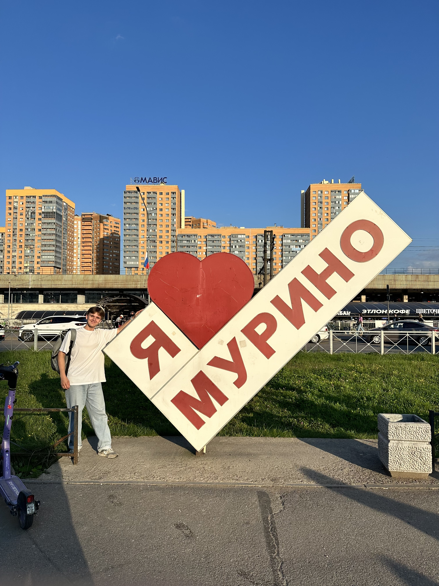

Фетюков Никита, 18 лет / Санкт‑Петербург
Студент ВШЭ СПб — Прикладная математика и информатика
PythonJavaScript / React ❤C++Олимпиады · Анализ данных
Обо мне
Вырос в Архангельске на севере страны. Начал программировать с 4 класса, прошёл отбор в «Сириус» и позже поступил в лучший лицей региона. Занимался олимпиадным программированием и математикой, выиграл олимпиаду по анализу данных и поступил в ВШЭ СПб.
- По необходимости снимал подкасты и концерты
- Разрабатывал платформы на заказ
- Могу собрать беспилотник буквально из подручных материалов :)
- Сейчас с ребятами делаем крутого AI‑гида в смартфоне — @itter_ru
Навыки
Языки и стек
PythonJavaScriptReactC++
Инженерия
АлгоритмыОлимпиадное программированиеАнализ данных
Медиа
Съёмка подкастовСъёмка концертовПет‑проекты
Достижения
- Призёр Национальной олимпиады по анализу данных
- Дважды победитель регионального этапа по информационной безопасности
- Призёр «Высшей пробы» по английскому языку
- Дважды участник Январской программы по математике в «Сириусе», обе закончил на 4 :(
- Выпускник «Яндекс Лицея» ’24
- 6 лвл фейсита, 1280 эло
- Медаль за выслугу 8 лет в Клеш Рояле
- 5 место в школе по русскому медвежонку в 5 классе
Контакты
Пишите в удобном мессенджере — всем отвечу)